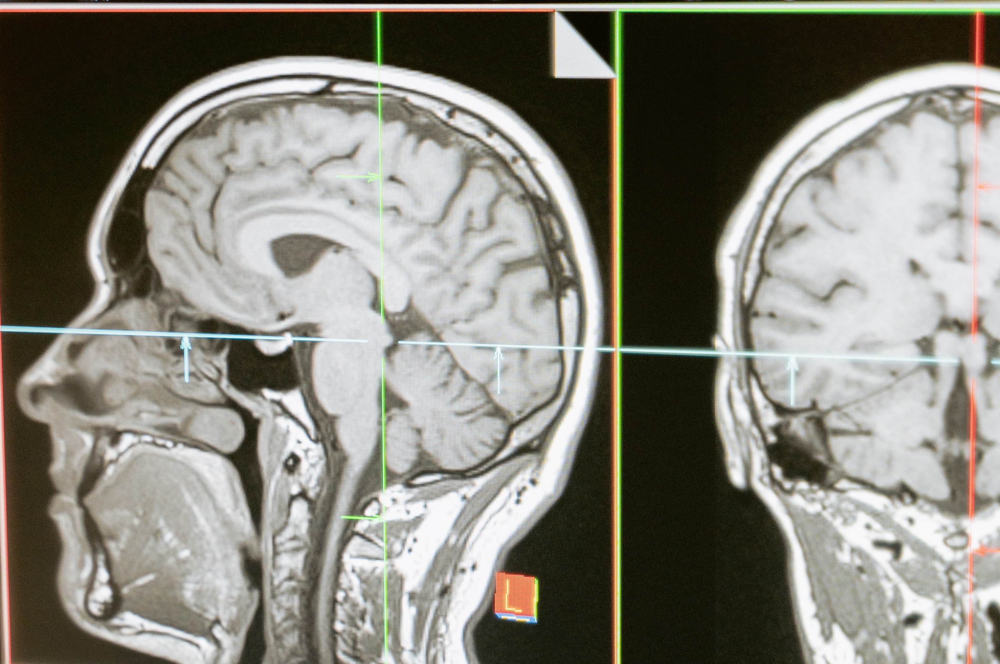
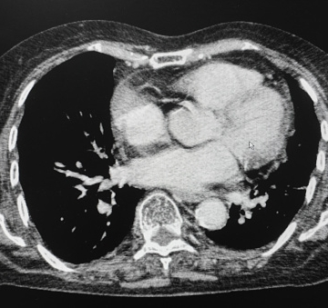
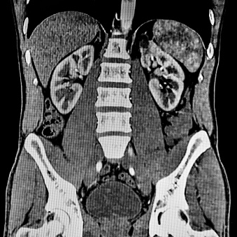

Reducing errors and promoting patient safety through the use of repeatable search patterns and sample reports
Sign up

Example templates
Non-contrast CT head

Contrast enhanced CT chest

Contrast enhanced CT abdomen and pelvis
I awlays struggled with structuring my reports, or even having a systematic way of approaching scans. These templates have really developed my interpretation and reporting skills.
- Dr O Adesalu MBBS MMedEd PgCert FHEA FRCR part 1
It's time to revolutionise your radiology reporting!
Sign up today by clicking that button right over there -->